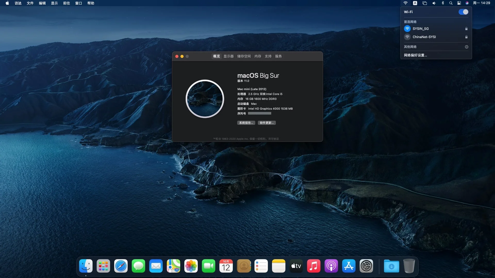
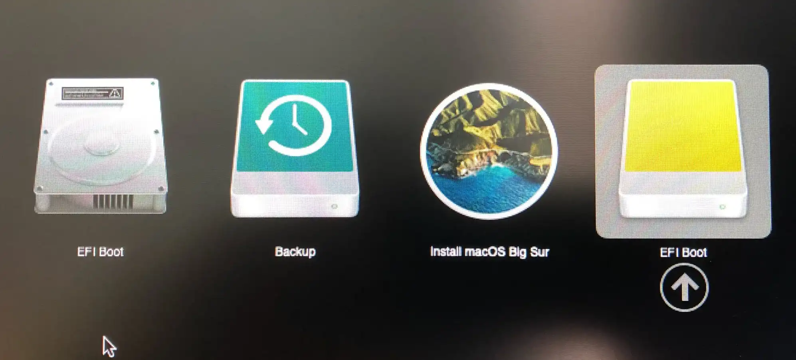

请访问原文链接：在不受支持的 Mac 上安装 macOS (索引页面) 查看最新版。原创作品，转载请保留出处。
作者主页：sysin.org
macfz：请停止抄袭！
已更新：在不受支持的 Mac 上安装 macOS Monterey (OpenCore Legacy Patcher v0.4.11)，提供了一种更加自动化的安装方式，推荐！
注意：Patched Sur（已经 404）和 MicropatcherAutomator 是 big-sur-micropatcher 的迭代产品，程序自动化程度更高。而更新的 [OpenCore Legacy Patcher] 更具优势。
2021.07.22 更新：现在有了 Moterey 版本，感觉这篇文章写的有点复杂，重新做了精简。
2020.11.18 更新：修正了两种安装方式的操作逻辑，相互没有依赖关系。
2020.12.10 更新：增加了补丁工具的百度网盘存档，方便下载。
2020.12.10 更新：增加一个章节 “系统升级”。
友情提示：安装系统前请备份数据！
笔者测试一台 Mac mini 2012 later，已经不在 Big Sur 官方支持列表，使用下面的方法，已经可以完美运行 Big Sur。

理论上，以下方法适用于 macOS Big Sur 11.x 任意版本，限于条件，笔者未能一一测试，新版本和各种机型也不可能去验证，欢迎读者分享自己的机型和版本适配情况。
1. macOS Big Sur 正式版发布
macOS Big Sur
一派新风貌，
一切任施展。
macOS Big Sur 将强大实力和优美外观的结合提升到一个崭新的高度。精心雕琢的全新设计，让你能淋漓尽致地感受 Mac 的魅力；Safari 浏览器迎来重大更新，待你饱览；地图 app 和信息 app 满载新功能，任你探索；更透明的隐私权限，保护也更周到。
macOS Big Sur 11 release date: 2020.11.12
2. 官方支持的 Mac 机型
- MacBook 2015 and later Learn more
- MacBook Air 2013 and later Learn more
- MacBook Pro Late 2013 and later Learn more
- Mac mini 2014 and later Learn more
- iMac 2014 and later Learn more
- iMac Pro 2017 and later (all models)
- Mac Pro 2013 and later Learn more
3. 不受支持的机型及问题
根据 macrumors 的总结，不受支持的 Mac 具体又分几种情况：
(1) 官方支持 macOS Catalina 但不受 macOS Big Sur 支持的 Mac 机型
– 这些 Mac 都能正常运行 Big Sur，但是 Wi-Fi 无法正常工作。（这类机型最容易通过补丁完美运行 Big Sur，目前仅仅是 Wi-Fi 的问题。）
可以按照下面的操作步骤，本文主要针对这类机型。
- 2012 and Early 2013 MacBook Pro
- MacBookPro9,x
- MacBookPro10,x
- 2012 MacBook Air
- MacBookAir5,x
- 2012 and 2013 iMac
- iMac13,x
- iMac14,x
- 2012 Mac mini
- Macmini6,x
- 2010-2012 Mac Pro*
- MacPro4,1
- MacPro5,1
*Not officially supported in macOS Catalina, but are fully capable of running both Catalina and Big Sur with a Metal-compatible GPU and upgraded Wifi/BT card.
(2) Mac 能够被补丁后正常运行 macOS Catalina，并且有可能被补丁来运行 macOS Big Sur
– 这些 Mac 目前可以启动 Big Sur，但目前没有 Wifi 或图形加速支持。
这类机型需要执行额外的步骤解决安装问题。
- Early-2008 or newer Mac Pro, iMac, or MacBook Pro:
- MacPro3,1*
- MacPro4,1*
- MacPro5,1*
- iMac8,1
- iMac9,1
- iMac10,x
- iMac11,x (systems with AMD Radeon HD 5xxx and 6xxx series GPUs were almost unusable when running Catalina and will be under Big Sur as well.)
- iMac12,x (systems with AMD Radeon HD 5xxx and 6xxx series GPUs were almost unusable when running Catalina and will be under Big Sur as well.)
- MacBookPro4,1
- MacBookPro5,x
- MacBookPro6,x
- MacBookPro7,x
- MacBookPro8,x
- Late-2008 or newer MacBook Air or Aluminum Unibody MacBook:
- MacBookAir2,1
- MacBookAir3,x
- MacBookAir4,x
- MacBook5,1
- Early-2009 or newer Mac Mini or white MacBook:
- Macmini3,1
- Macmini4,1
- Macmini5,x (systems with AMD Radeon HD 6xxx series GPUs were almost unusable when running Catalina and will be under Big Sur as well.)
- MacBook5,2
- MacBook6,1
- MacBook7,1
- Early-2008 or newer Xserve:
- Xserve2,1*
- Xserve3,1*
*Not officially supported in macOS Catalina, but are fully capable of running both Catalina and Big Sur with a Metal-compatible GPU and upgraded Wifi/BT card.
(3) 完全不受支持的 Mac
这类机型不用考虑安装 Big Sur。
- 2006-2007 Mac Pros, iMacs, MacBook Pros, and Mac Minis:
- MacPro1,1
- MacPro2,1
- iMac4,1
- iMac5,x
- iMac6,1
- iMac7,1
- MacBookPro1,1
- MacBookPro2,1
- MacBookPro3,1
- Macmini1,1
- Macmini2,1
- — The 2007 iMac 7,1 is compatible with Catalina and potentially Big Sur if the CPU is upgraded to a Penryn-based Core 2 Duo, such as a T9300.
- 2006-2008 MacBooks:
- MacBook1,1
- MacBook2,1
- MacBook3,1
- MacBook4,1 (as with Mojave and Catalina, we’ll be on our own here, but Big Sur will be running on this machine!)
- 2008 MacBook Air (MacBookAir 1,1)
- All PowerPC-based Macs
- All 68k-based Macs
4. 安装准备
(1) 下载 macOS Big Sur
直接下载完整映像，请访问：https://sysin.org/blog/macos-big-sur/
下载完毕后，双击打开映像，将 “Install macOS Big Sur” 拖拽到应用程序（Applications）下。
(2) 下载补丁工具
下载最新版 big-sur-micropatcher
或者百度网盘链接：https://pan.baidu.com/s/1NWeFwD58R_-JpHR9GbIdiw?pwd=v1wu
(3) 准备一个 16G 及以上的 USB 存储设备
可以是 U 盘，也可以是 SD 卡，当然最好是 SSD 的移动硬盘，容量 16G 及以上。
5. 操作步骤
macOS 11 相比之前的 10.x 是一个大版本更新，建议使用这种方式抹掉全盘全新安装。
(1) 创建启动介质
准备一个 16G 或者以上的 U 盘（或者其他 USB 存储设备，以下简称 U 盘），打开 “实用工具 > 磁盘工具”，选择 U 盘，点击 “抹掉”，格式如下：
- Mac OS X 扩展（日志式）；
- GUID 分区图；
- 分区名称：sysin（默认为 Untitled，可以自定义，注意下面终端命令中的 sysin 也要改成你自定义的同样的名称）
打开 “终端”，执行如下命令：
1 | sudo /Applications/Install\ macOS\ Big\ Sur.app/Contents/Resources/createinstallmedia --volume /Volumes/sysin |
根据提示输入当前用户密码（sudo 密码），按 Y 确认，等待几分钟即可完成。
注意：创建完毕后，分区名称将自动修改为：
Install\ macOS\ Big\ Sur
(2) 在 “终端” 中切换到 big-sur-micropatcher 目录下
将 big-sur-micropatcher 解压缩放置到 home 目录下，即 /Users/<你的用户名>/ 目录下
当然也可以是任意目录，在 “终端” 中切换到 big-sur-micropatcher 目录即可：
1 | 这里版本号 0.5.0，根据下载的实际版本修改 |
使用 ls 命令查看文件，确保如下文件正确的出现在当前目录下：
1 | ls |
(3) 运行 micropatcher.sh
打开 “终端” 执行命令：
1 | sudo bash micropatcher.sh /Volumes/Install\ macOS\ Big\ Sur |
(4) 运行 install-setvars.sh
继续在 “终端” 执行：
1 | sudo bash install-setvars.sh /Volumes/Install\ macOS\ Big\ Sur |
(5) 自动执行补丁
重启系统，按住 Option 键不放直到出现启动分区选择画面，此时会额外出现两个图标 “Install macOS Big Sur” 和 “EFI Boot”，选择 “EFI Boot”，此时将从 “EFI Boot” 分区启动 (sysin)，等待数秒将自动关机（可能瞬间关机），该过程将执行如下操作：disabling SIP, disabling authenticated root, and enabling TRIM on non-Apple SSDs。

提示：如果不确定该选择哪个 “EFI Boot” 图标，比如安装过 Windows 双系统可能有额外的 “EFI Boot” 图标，可以将 U 盘拔掉重新插上，观察图标变化来确定。本例中使用的 SSD 移动硬盘，图标是不一样的。
(6) 开始安装 macOS Big Sur
重新开机，按住 Option 键不放直到出现启动分区选择画面 (sysin)，选择 Install macOS Big Sur，启动后，选择 “磁盘工具”，抹掉系统分区（默认名称为 “Macintosh HD”，格式选择 APFS），开始正常安装过程，具体不再赘述。
直接选择原有系统分区可以升级安装（不推荐，可以用于以后新版 Big Sur 的升级）。
(7) 解决网卡驱动问题
在某些机型，无线网卡已经工作正常（Late 2013 iMac, 或者你的 2012/2013 机型使用 802.11ac 网卡替换了 802.11n 网卡）。
如果无线网卡无法工作，再次使用 U 盘启动到 “Install macOS Big Sur” 分区，启动后，选择 “Utilities (实用工具) -> Terminal（终端）”，执行如下命令（三种格式都可以支持，任选一个，“Macintosh HD” 是默认名称，根据实际名称修改）：
1 | /Volumes/Image\ Volume/patch-kexts.sh /Volumes/Macintosh\ HD |
(8) 重启
重启到 macOS Big Sur，此时 Wi-Fi 修复成功，macOS Big Sur 已经可以完全正常运行。
注意：如果 Wi-Fi 没有工作，关闭然后重新打开即可。
6. 关于报错：BIErrorDomain Error 2
该错误通常是因为目标磁盘空间不足，通常需要 35GB 左右的剩余空间。如果 Install app 没有放在 “应用程序” 目录下，也会出现相同错误提示。

7. 额外步骤
对于 2012、2013 年机型，即官方支持 macOS Catalina 但不受 macOS Big Sur 支持的 Mac 机型，Mac 已经完全正常工作，但是一些老旧机型，需要一些额外的步骤，可以参看以下说明：
install-macos-big-sur-mac-obsolete
8. 系统升级
如果新版 Big Sur 发布如何升级？
其实就是使用新版的 macOS 软件包以相同方式补丁后重新安装一遍，在操作步骤（6）安装的时候不要抹掉原有分区，选择原有分区安装即可升级，数据会保留并不会被覆盖。如果需要修复 Wi-Fi，以同样的方式操作。
当然也可以抹掉原有分区进行全新安装。
需要（等待）更新以下软件：
即使是官方支持的 Mac 机型也不建议随意在线更新。更何况 OLP 还存在版本适配问题，特别是 macOS 版本未到达 x.5 之时。
9. 项目更新
本项目最后更新于 2020 年 11 月 13 日，应该不会再有更新了。
如果操作异常，请查看新版文章：在不受支持的 Mac 上安装 macOS Monterey (OpenCore Legacy Patcher v0.4.11)
更多：

文章用于推荐和分享优秀的软件产品及其相关技术，所有软件默认提供官方原版（免费版或试用版），免费分享。对于部分产品笔者加入了自己的理解和分析，方便学习和研究使用。任何内容若侵犯了您的版权，请联系作者删除。如果您喜欢这篇文章或者觉得它对您有所帮助，或者发现有不当之处，欢迎您发表评论，也欢迎您分享这个网站，或者赞赏一下作者，谢谢！
 支付宝赞赏
支付宝赞赏  微信赞赏
微信赞赏赞赏一下
敬请注册！点击 “登录” - “用户注册”（已知不支持 21.cn/189.cn 邮箱）。 请勿使用联合登录（已关闭）。